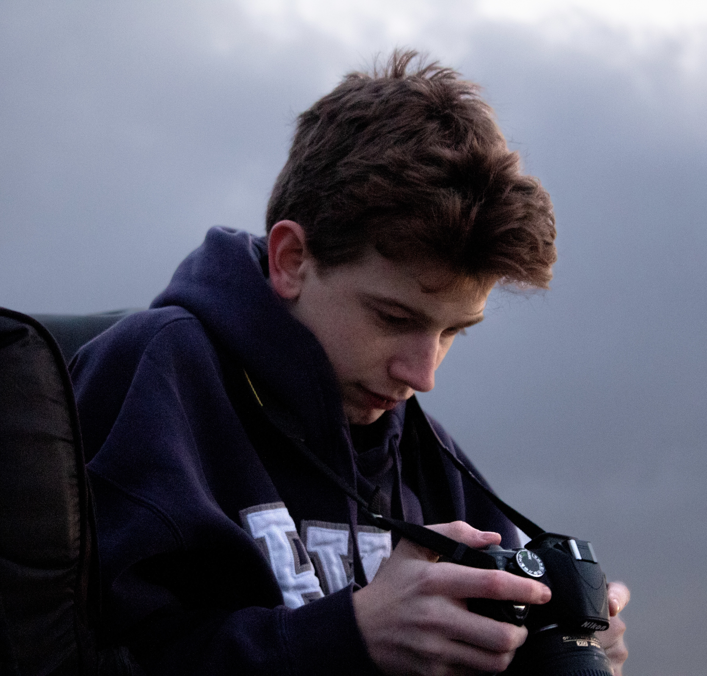

ABOUT

Carson Dibb — Photographer
I’m Carson Dibb, a photographer based in Utah with a focus on capturing people, events, and the moments that make them memorable.
My work ranges from portraits and creative photoshoots to concerts, sporting events, and live experiences. I enjoy working in fast-moving environments where timing, composition, and the ability to adapt all matter.
Photography is both a creative outlet and a way for me to document the world around me. Whether I’m photographing an athlete in motion, a performer under stage lights, or a portrait in a quiet setting, my goal is to create images that feel authentic to the moment.
I’m always looking for new people, places, and projects to photograph.
CONTACT
Contact me for a photoshoot or project collaboration.
Get in touch